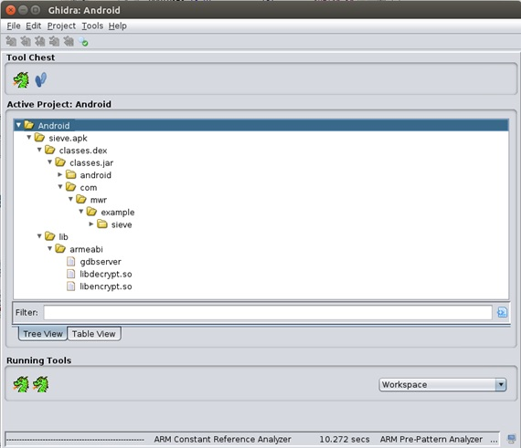
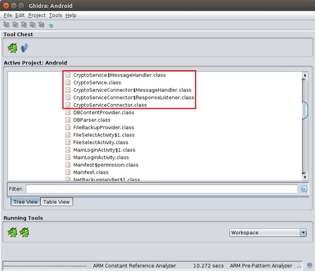
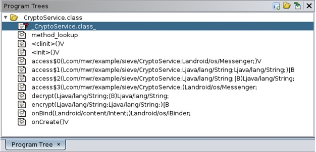
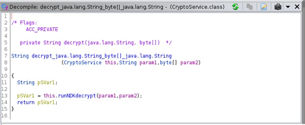
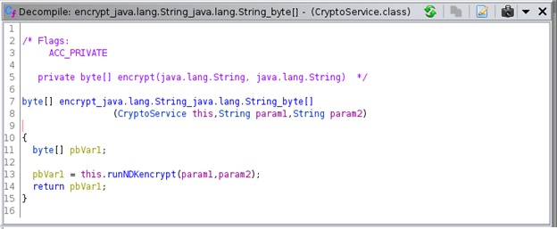
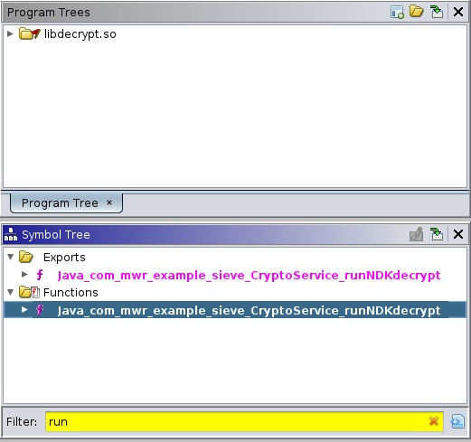
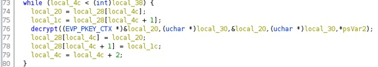
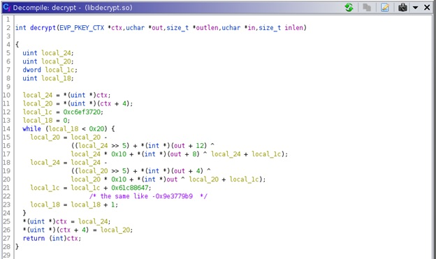

Reverse engineering is the long process of analyzing the low-level program code of an application. This step is necessary for the mobile penetration testing as it can reveal hidden or unused program features, bypass root access detection, discover hardcoded keys etc. Reverse engineering can be done using various famous programs: JADX, Bytecode viewer, IDA Pro, Ghidra, JEB.
In this article, we will show you how to analyze a mobile application using Ghidra.
Before we start to reverse engineer the target app, we should have some understanding of Ghidra. Ghidra is a reverse engineering tool released by NSA and published for free use in 2019.
Ghidra supports many architectures, there is a complete list of them:
● x86 16, 32 and 64 bit
● ARM and AARCH64
● PowerPC 32/64 and VLE
● MIPS 16/32/64
● MicroMIPS
● 68xxx
● Java and DEX bytecode
● PA-RISC
● PIC 12/16/17/18/24
● SPARC 32/64
● CR16C
● Z80
● 6502
● 8051
● MSP430
● AVR8, AVR32
● SuperH
It is a great choice for analyzing Android applications as it has a built-in decompiler that makes the code easier to read rather than the assembler instructions, which are most likely ARM.
Let us take the vulnerable password manager sieve.apk. First, we import the apk file into Ghidra. Then we examine the contents of the package. It includes 3 ARM libraries: gdbserver, libdecrypt.so and libencrypt.so. The last two native libraries are the most interesting for us, so we need to take a look at the sieve classes that can work with them.
The Sieve application declares CryptoService.class, which probably does encryption and decryption using the library methods. This is where we are going to start.
Getting started disassembling with CryptoService.class, we have the following list of methods:
Each method has a type signature after the name. At that time we have to introduce Java Native Interface, JNI for short. JNI allows Java code to call and to be called by native libraries. By using this concept developers can write C and C++ code, where there is no Java implementation.
Let us define a list of type signatures with associated Java types:
● V - void
● Z - boolean
● B - byte
● C - char
● S - short
● I - int
● J - long
● F - float
● D - double
● L fully-qualified-class ; - fully-qualified-class
● [ type - type[]
● ( arg-types ) ret-type - method type
Returning to the screenshot above, we are trying to understand the declaration of decrypt method.
decrypt(Ljava/lang/String;[B)Ljava/lang/String;
The method takes two arguments, the first one is a fully qualified class java/lang/String, so it is a simple string and the second is a byte array. The return type is string as well as the type of the first argument
So the declaration of decrypt method in Java programming language looks like this:
string decrypt(string str, byte[] arr);
Continuing the analysis, we are trying to find operations with native libraries.
Looking at the static initializer
At this point, we should know the basics of importing native libraries. There are 2 methods to do that by using:
● System.loadLibrary(encrypt)
● System.load("lib/armeabi/libencrypt.so")
The first method does not explicitly indicate the location of the library, whereas the system has to determine the cpu and make a path itself, as in the second method. Also when using loadLibrary we only specify the name of the library without lib prefix. Thus, the application loads libencrypt.so and libdecrypt.so in order to use methods from them.
At the moment we have to check all methods and find those that are not included in the class. Let us analyze decrypt method, there is runNDKdecrypt call. The name contains NDK (Native Development Kit), just like JNI, it allows developers to write C and C++ code for Android applications, so we can already go to libdecrypt.so library to explore this method.
Method encrypt also calls a function from native library, but in this article we move on with runNDKdecrypt.
Then we have to go back to the file browser window in Ghidra and load libdecrypt.so for later analysis. When looking for runNDKdecrypt function, we came across with Java_com_mwr_example_sieve_CryptoService_runNDKdecrypt, which is an example of dynamic linking followed by Java prefix, package name, class name and method name separated by an underscore (_).
Looking at the decompiled code, we need to determine the encryption algorithm used by the password manager. On line 76, there is call of decrypt function.
By looking inside decrypt function, you can find constant values such as 0xc6ef3720 and 0x61c88647. After a bit of googling, we found it to be Tiny Encryption Algorithm block cipher.
*You can notice the multiplication by 0x10 in the screenshot, where it should be rotated left on 4. 0x10 in decimal is 16 and multiplying by 16 is the same as rotate left on 4.
Finally, the encryption/decryption procedure used in sieve application is done through TEA. This knowledge gives us the ability to manually decrypt and encrypted data on the side.
In this research we learned how to use Ghidra during mobile penetration testing, how Ghidra works with native libraries and learned what JNI and NDK are.
● https://ghidra-sre.org
● https://github.com/as0ler/Android-Examples/blob/master/sieve.apk
● https://en.wikipedia.org/wiki/Tiny_Encryption_Algorithm